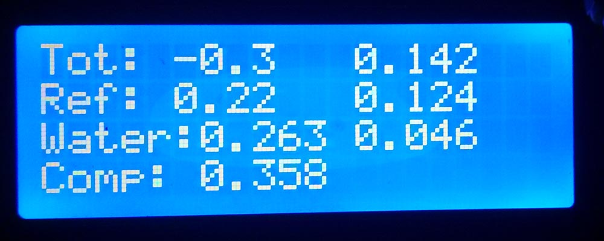
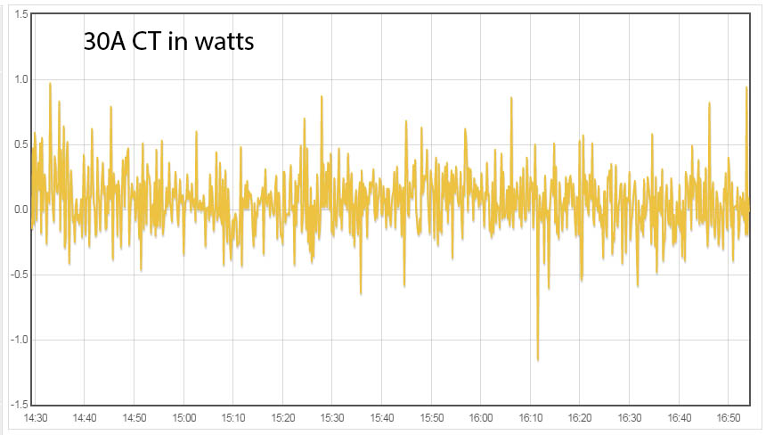
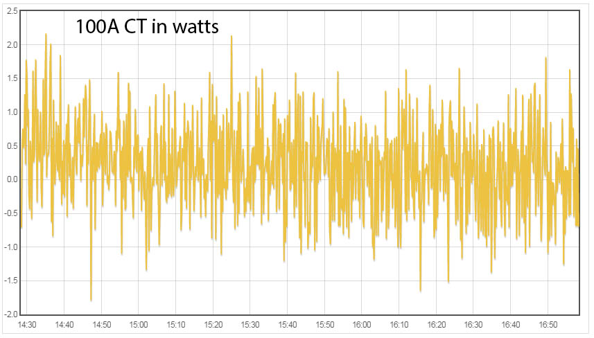

I am building (have build) Arduino based energy monitor. I can't get 5V out of Arduino. I only get about 4.8V. So at the mid point I get only ~2.2-2.3V.
The question is how critical is to have exactly 2.5v at the mid point? And what are the consequences if I can't get exactly 2.5V?
Please advise,
Ramunas
Re: how critical is to have exactly 2.5v at the mid point
The purpose of the mid-point reference voltage is so that the signal to be measured can swing to either side of it. If the reference is slightly away from the mid-point, it just means that the peaks of your AC signal will hit the end-points of the measurement range a bit sooner that they would otherwise have done for a signal of the same amplitude.
Providing that your reference voltage before remains constant, the maths will remove any DC content, regardless of its absolute level.
Re: how critical is to have exactly 2.5v at the mid point
thanks for the reply Calypo. I am using LM358 to stabilize the mid point voltage so I hope that it will remain constant.
So I guess the reason that my inputs are sensing some current with no loads attached (from 0.3-0.8A) has nothing to do with my mid point voltage being about 0.2-0.3v off.
Re: how critical is to have exactly 2.5v at the mid point
Correct. What you are seeing there is almost certainly noise from the digital side of the processor leaking into the analogue side - we think the likeliest route is via the analogue supply and analogue reference.
Re: how critical is to have exactly 2.5v at the mid point
Robert - sorry but I am not sure what you mean by "via the analogue supply and analogue reference".
I have my Arduino powered from Beagle Bone via USB cable. Is there any way to clean up that noise that I am seeing?
Re: how critical is to have exactly 2.5v at the mid point
Probably not. I obviously didn't know what you were using, it was possible that you had designed your own PCB. The processor has separate pins for these functions, and the manufacturer (Atmel) recommends filtering between the digital and analogue supplies. As far as I know, only a few Arduino boards have any filtering, and anecdotally most complaints of noise seem to come from users of Arduino plus Shield, or Arduino plus plugboard front-end.
If you use an ac voltage input and calculate real power, then you will see an improvement because the maths of the rms current calculation rectifies all the noise, whereas in the real power calculation, current is multiplied by voltage and then averaged, so much of the noise averages out and disappears.
Re: how critical is to have exactly 2.5v at the mid point
I did constructed my own PCB. My PCB holds 2 inputs for the 100A CT's and 5 inputs for 30A CT's as well as AC voltage sensing circuit. I can add the pictures of the PCB if that helps. I do calculate realPower.
So I guess the question is, is there a way to filter the noise? Or should I even worry about it? The reason I am asking is that the readings that I receive from my rig does not match with the "Kill a watt" meter or the portable current clamp meters. The difference is almost 1A at the low end (hard to measure in high end). For the 30A CT's I have calibration at 30, and for the 100A CT's I have calibration set to 58.8 with the 33 oms resistors.
Re: how critical is to have exactly 2.5v at the mid point
Clearly, you are worried about the noise. Are you using your own PCB design or an Arduino, or is it your design of front end feeding into the analogue inputs of an Arduino? There is a lot of information on the Atmel website that, if you have not seen it, is worth looking at.
I am guessing that you are seeing the 0.8 A on the 100 A inputs, so less than 1%. Even so, the emonTx can normally do better than that. But what is the maximum power that you can measure, and what is the noise power that you are seeing? How does that correlate with the 0.8 A? I would be very surprised if it does, for the reason I gave in a previous post.
Re: how critical is to have exactly 2.5v at the mid point
I have my Arduino powered from Beagle Bone via USB cable.
A very common source of ADC noise is a ripply Vcc supply. As an experiment, you could try powering your Arduino via it's DC-IN jack at a higher voltage thereby using the onboard regulator to produce the Vcc.... most of them are pretty clean. There's more on that here: http://openenergymonitor.org/emon/node/10111
Re: how critical is to have exactly 2.5v at the mid point
Thanks for the interesting link. I will experiment with that. When I was trying to get my voltage exactly at 5v I had 12v power connected to DC-IN. I noticed that the part next to the jack (voltage regulator I am guessing) was getting very hot. I am not sure if that is the problem or just normal operation to cut down 7v...
My only issue is, how would I record the data if I am not connected to USB. Is there any way to connect to serial without USB? I guess displaying on LCD screen is one option.
Re: how critical is to have exactly 2.5v at the mid point
Hi Robert,
I am using Arduino Mega and my own soldered PCB to connect the CT's and Voltage input. I will take a look at Atmel website.
I believe so that I was seeing 0.8 on the 100A inputs (it would be nice if I can downsize the inputs to 50A since the whole house will never use 100A). On the 30A input, currently CT's are attached to the wires in fuse box on the water heater. With the heater not running I am seeing fluctuation from 1.9 to 9 watts. I will try to run another test with CT's disconnected and power from DC-IN once I figure out how to capture the data.
thanks,
Ramunas
Re: how critical is to have exactly 2.5v at the mid point
To change from 100 A max. to 50 A max, you can double the value of your burden resistor.
Re: how critical is to have exactly 2.5v at the mid point
My only issue is, how would I record the data if I am not connected to USB.
Most Arduino designs let you use the USB for data while still powering the Arduino via the DC-IN jack. But power distribution is an area that every Arduino designer tends to do their own thing, some better than others, so you really need to check the schematic for your exact Arduino to see if they've handled it properly.
The EtherMega I used in the experiments in the link above has a very simple but effective 3-way jumper that allows you to tie Vcc to the output of the on-board DC-in regulator, or to the USB 5V, but never both. Other designs use comparators to only switch the USB 5V through if there's no voltage found on the DC-in input.
Re: how critical is to have exactly 2.5v at the mid point
Do you know if the accuracy will improve by reducing the range only up 50 A
Is there any way to reduce the range for the 30A CT's that do not have any burden resistors?
Re: how critical is to have exactly 2.5v at the mid point
Most Arduino designs let you use the USB for data while still powering the Arduino via the DC-IN jack. But power distribution is an area that every Arduino designer tends to do their own thing, some better than others, so you really need to check the schematic for your exact Arduino to see if they've handled it properly.
The EtherMega I used in the experiments in the link above has a very simple but effective 3-way jumper that allows you to tie Vcc to the output of the on-board DC-in regulator, or to the USB 5V, but never both. Other designs use comparators to only switch the USB 5V through if there's no voltage found on the DC-in input.
I do not think that my Arduino has the jumpers to select the power but I will inspect it when I get home. I will experiment with different options.
thanks for the info.
Re: how critical is to have exactly 2.5v at the mid point
"Do you know if the accuracy will improve by reducing the range only up 50 A"
The best way would be to leave the original burden resistor and use a 2-turn primary winding for your CT - but the cable size/CT aperture combination might not allow that. That is because the CT will still be working at the design flux density. The next best is to double the resistance of the burden. Both will reduce the noise (pro rata) but the second will marginally worsen the accuracy, the first is preferred.
"Is there any way to reduce the range for the 30A CT's that do not have any burden resistors?"
The 30 A CTs do have burden resistors, but they are internal. If you have the YHDC SCT-013-030, then as far as I know, that is identical to the -000 except that the -000 has zener diodes inside the casing to protect against over-voltage, which are unnecessary if the burden resistor is internal and cannot be disconnected. The CT is quite easy to disassemble, and if you have a suitable SMT resistor, you could change that. The CT secondary gives you 15 mA @ 30 A, you want about 1.66 V rms (no more) at whatever maximum current you decide, so calculate the burden value from that. Or you could convert it into a -000 by removing the burden resistor and fitting a pair of 8.2 V zener diodes and use an external burden resistor. If you don't want to do either, then without going to a 2-turn primary (15 A max), there's nothing you can do.
Re: how critical is to have exactly 2.5v at the mid point
So yesterday I did some experimenting with different power supplies to see how much noise I am getting from the power. This is the pics of what my rig looks like.
To measure the noise, I was using Robin's minManAndRangeChecker.ino
Here the results max indicates the bigest difference between min and max:
Arduino Mega 2560
Powered from DC-IN via 12v battery max variance max 3
Powered from DC-IN via 12v WD HDD power adapter max 31
Powered from DC-IN via 12v sec cam power adapter max 73
Powered from DC-IN via 12v sec cam power adapter max 34 interesting since it's identical adapter...
Powered from DC-IN via 12v sec cam power adapter max 80
Powered from DC-IN via 12v cable modem adapter max 370
powered from usb via BBB variance max 25
powered from usb via my computer variance max 18
powered from usb via Black Berry blk usb var max 13
powered from usb via Black Berry wht usb var max 15
powered from usb via Verizon usb variance max 15
powered from usb via Wasabi Power GoPro variance max 52
powered from usb via cut usb cable to old power max 21 (but for the most part would stay below 10)
I was surprised how differently the power adapters performed. The 2 best options were Black Berry USB chargers and old transformer based 5.2V power adapter (I cut USB cable and powered it that way).
After I scratched my head for 30 mins on why I am still getting such a high differences, since my first prototype on UNO with no LM and 10uf caps was getting only difference of 3. I decided to add a 10uf capacitor from the ground to buffered 2.5V. As soon as I added the capacitor, differences decreased to about 2-3. See the pic, this is in Watts. Tot: is the sum of 2 100A CT's and Water: is the sum of 2 30A CTs. The rest are 30A CTs.

I say not too bad. So after letting it run for a while this is what emoncms is showing:


I think at this point, I am happy with my nose levels. I just hope the added 10uf capacitor won't affect the accuracy of the CT's.
Thanks everyone, for your input and help!
Re: how critical is to have exactly 2.5v at the mid point
"I just hope the added 10uf capacitor won't affect the accuracy of the CT's."
How can it? That 2.5 V rail is supposed to be a ground to ac signals, so making it even more grounded will only affect the accuracy in a positive way.
But the need to add the capacitor does suggest that the op.amp. is marginally stable or even oscillating.
Re: how critical is to have exactly 2.5v at the mid point
But the need to add the capacitor does suggest that the op.amp. is marginally stable or even oscillating.
how can I verify if op.amp is stable and doing what it suppose to do?